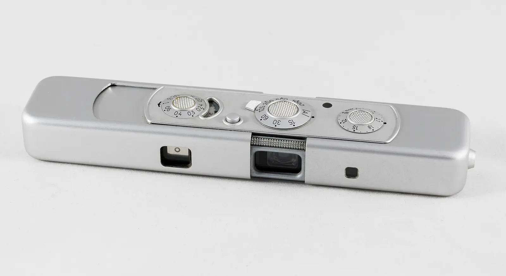

短答
规范链接为可能通过多个地址访问的文档标出首选 URL。把它指向 HTML 陈述该主题的 URL，并让该 URL 的规范标记指向自己。它不会把两个不同的产品并成一个。

定义
重复来自参数、尾部斜杠变体、打印副本和模板。规范标记是关于哪个 URL 才是文档的提示。如果它指向 404、重定向或讨论另一个主题的 URL，这个提示就是噪声。hreflang 的对照页也应该是规范 URL。当每种语言都是持有相同事实的独立文档时，不要把所有语言都规范到英文。
页面上怎么出现
获取 URL，读规范标记，再获取该目标。确认一个主题、一个首选 URL，以及使用它的内部链接。只是重排列表的参数 URL 可以指向干净的文档。会改变产品的参数 URL 应当是自己的文档，或者不应当存在。
要检查什么
- 首选 URL 返回 200，并把自己标为规范地址。
- 规范目标讨论的是同一主题。
- 语言 URL 不坍缩成一种语言。
- 内部链接优先使用规范地址。
一个结构示例
每种表面处理变体都规范到未涂层产品，于是涂层范围永远没有自己的 URL。修复是让涂层范围拥有自己的文档和自我规范，或者在一份文档里写明两个范围并停止发布空的变体 URL。然后复审。不声称任何合并奖励。
它不声称什么
正确的规范标记不保证排名或 AI 引用。Mika 检查首选 URL 是不是你打算使用的那一个。
Mika Visibility 把它归到哪里
规范地址是文档的地址，不是用来藏起第二个产品的办法。 Mika Visibility 把这项检查放在 SEO 健康轨道上，和可抓取性、状态码、页面基础放在一起。SEO 增长仍是另一个问题：哪些覆盖还没有写出来。GEO 仍是另一个问题：认真的读者能否在页面上找到可支撑的回答。没有混合总分。
常见问题
规范链接标出的是什么？
规范链接为可能通过多个地址访问的文档标出首选 URL。把它指向 HTML 陈述该主题的 URL，并让该 URL 的规范标记指向自己。它不会把两个不同的产品并成一个。
语言 URL 何时不应共用一个规范地址？
重复来自参数、尾部斜杠变体、打印副本和模板。规范标记是关于哪个 URL 才是文档的提示。如果它指向 404、重定向或讨论另一个主题的 URL，这个提示就是噪声。hreflang 的对照页也应该是规范 URL。当每种语言都是持有相同事实的独立文档时，不要把所有语言都规范到英文。
规范标记能保证排名吗？
正确的规范标记不保证排名或 AI 引用。Mika 检查首选 URL 是不是你打算使用的那一个。
下一步
做一次结构化的 SEO 与 GEO 审计，看健康发现、增长缺口，以及可以执行的蓝图。
更清楚的实体、回答、证据和上下文，让页面更容易被理解和转述。任何回答产品中的结果都不保证。